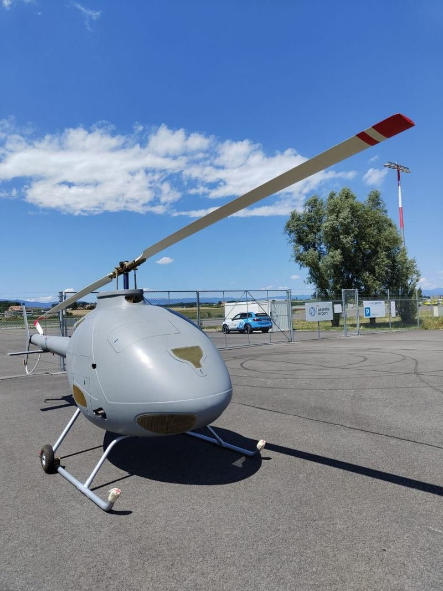
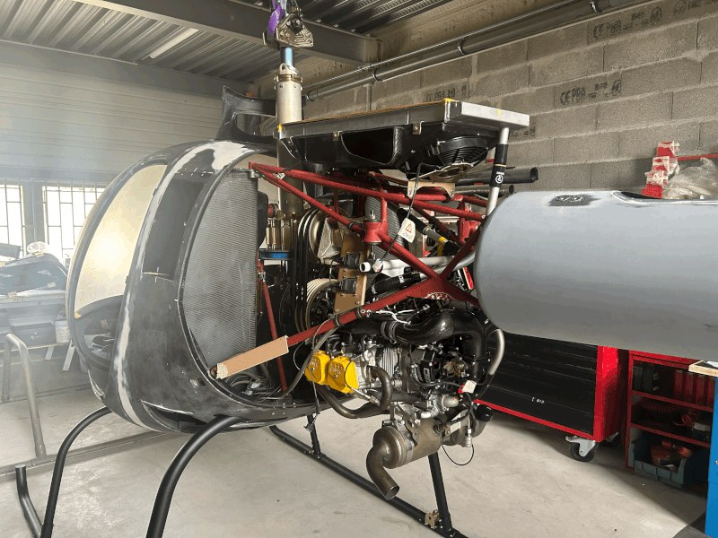
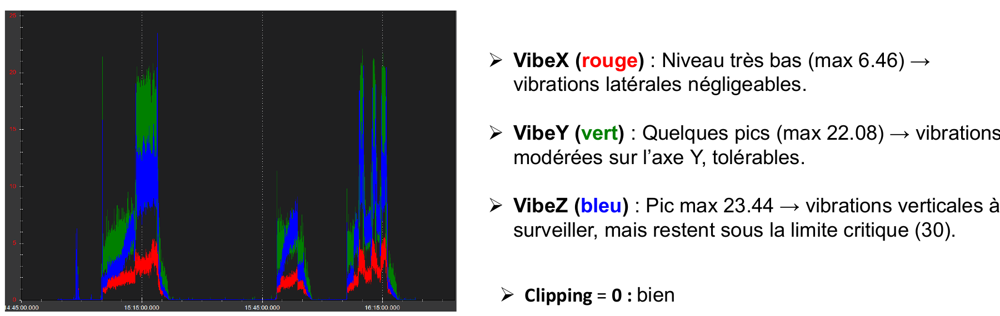

Separate the symptoms
The supplied logs raised questions around position drift, altitude and yaw tracking. I reviewed swashplate and servo mapping, governor and RPM behaviour, motor interlock, failsafes, yaw response and power-bus data.
Connect the subsystems
The diagnostic work also covered vibration and notch filtering, external INS and EKF3 configuration, and rangefinder settings. Each finding needed to connect a recorded symptom with a check or corrective recommendation.

State the test boundary
The latest supplied evidence supported a static run-up review and recommendations for further hover testing. I documented findings and acceptance criteria for subsequent tests. This is not a claim of a completed post-fix flight campaign.
From the project documents
Inside the report · 1 pages
Helicopter vibration review
An edited public work sample from my helicopter log-analysis report. The excerpt shows channel-by-channel vibration interpretation and clipping review.

Read the PDF here
This excerpt is from the earlier diagnostic report. The later supplied evidence covers static run-up checks and preparation for further hover testing; completed post-fix flight validation is not claimed.
Project record
Latest supplied validation: static run-up review and recommendations for further hover tests.